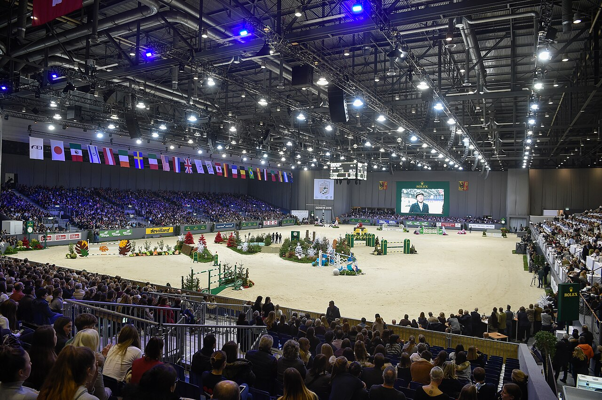

CHI Geneva cumple 100 años: Palexpo recibe el 9 de diciembre la Major de salto que cierra el curso
El Concurso Hípico Internacional de Ginebra celebra su centenario del miércoles 9 al domingo 13 de diciembre en Palexpo.

El programa oficial del CHI Geneva confirma la estructura habitual —Trophée de Genève, Prix des Communes Genevoises y Credit Suisse Classic como clasificativas— y añade este año un brunch dominical inaugural antes del Gran Premio. El organizador también presentará una aplicación desarrollada con Rabobank para que espectadores con discapacidad visual puedan seguir el Rolex Grand Prix en tiempo real.
El Rolex Grand Prix del domingo 13 es la cita central. El vigente Rolex Grand Slam se decide a lo largo del circuito que une CHIO Aachen, Spruce Meadows, CHI Geneva y Dutch Masters. El ganador del año pasado en Ginebra fue el estadounidense Kent Farrington con "Landon", según recogió entonces el propio comunicado oficial de Rolex. La final de la IJRC Top 10 Final, reservada a los diez primeros del Ranking Longines, se correrá a dos mangas sobre un recorrido de 1,60 m.
Ginebra arrancó su concurso internacional en 1926 y lo ha consolidado como el indoor más completo del año: cinco días con pruebas CSI5* de salto, pero también doma en grado alto, concursos de ponis Massimo Dutti, carrusel del Cadre Noir y un cross-indoor del completo. En términos deportivos, es la última estación antes del parón navideño: tras Ginebra solo queda Jumping Mechelen para cerrar el calendario internacional de 2026.
Por Lucía Valdeolmos